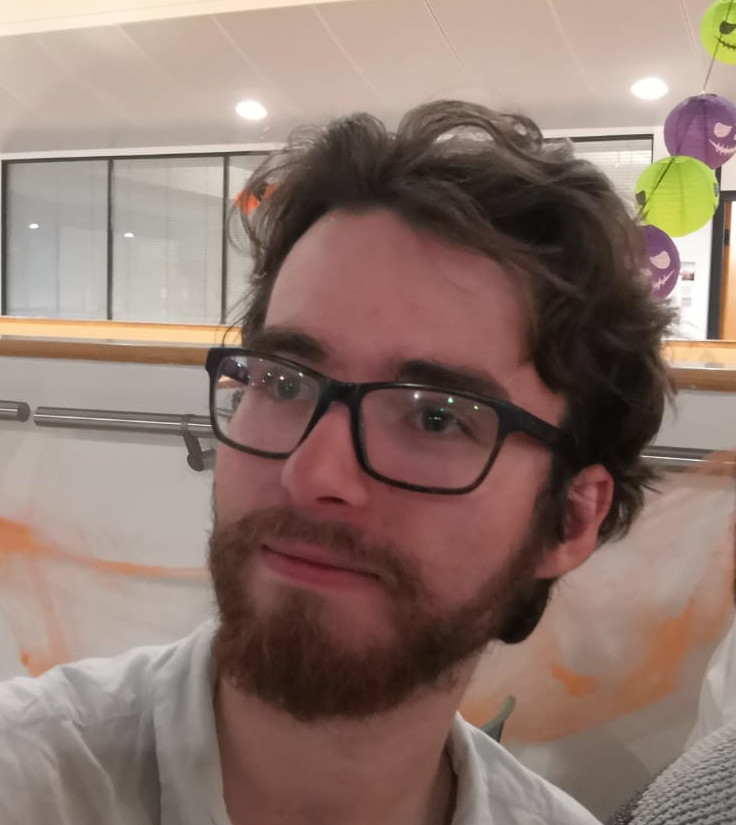

Alex Rice

I have just started my PhD at the University of Birmingham. I am working under the supervision of Jamie Vicary and Martin Escardo.
Contact
| a.rice at pgr.bham.ac.uk | |
| Office Address | Room 218 School of Computer Science University of Birmingham Edgbaston B15 2TT Birmingham United Kingdom |
| Matrix | @alexarice:matrix.org |
| GitHub | https://github.com/alexarice |
About Me
I am working within the theory group at the School of Computer Science at the University of Birmingham. My main interest at the moment is in category theory, especially higher category theory though I am also interested in learning Homotopy Type Theory. I am currently working on the graphical proof assistant homotopy-io, which is based on the theory of associative n-categories.
Before starting my PhD I completed a 4-year integrated masters program in Mathematics and Computer Science at the University of Oxford. During this time I took courses including Category Theory (including theory of monoidal categories), Algebraic Topology, Homological Algebra, Logic, ZFC Set Theory, and Representation Theory.
I also enjoy playing with functional programming languages such as Haskell or Agda and am a user of Emacs and the Nixos Linux distribution.
Teaching
- I was a teaching assistant for "Advanced Functional Programming" (Autumn 2019)
- I am a teaching assistant for "Logic and Computation" (Spring 2019)
Events
Talks
- 19th March 2020: Birmingham theory group lab lunch - Coinductive invertibility in Higher Categories
Posts
- Strictly Associative Group Theory - 26/03/2020